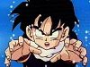

De: La Frikipedia, la enciclopedia extremadamente seria.
De: La Frikipedia, la enciclopedia extremadamente seria. De: La Frikipedia, la enciclopedia extremadamente seria.
| De la serie Bola de dragón: | |||
| Son Gohan | |||
| |||
| Origen | Tras un buen Polvo entre Goku y Chichi | ||
| Torneos ganados | De llantos y lloriqueos | ||
| Ki | Cuando le quitan la gomina puede ser capaz de todo | ||
| Técnica favorita | "Me tiño en un periquete" | ||
| Malo o Bueno | Ante todo es buen chaval | ||
| Objetivo | Que no le suelten una somanta de palos | ||
| Notas | Si fuese a clase mas de tres episodios seguidos le daría un síncope | ||
«Tu madre es calva... ¡Y tiene verrugas!»
~ Gohan explicandole a Nappa lo que sabe de su madre (porque la violó).
Son Gohan o Songohanda en la versión española es un chaval que es mitad Super Saiyan y mitad humano. Como todo Super Saiyan tiene la capacidad de cambiar el tinte del pelo solo con pegar un par de gritos.
Gohan fue un niño problematico, ya que al igual que Mutenroshi, para que tome ejemplo del anciano coleccionista de revistas porno. Pero, tras lo que viene siendo una corta visita aparece en acción Raditz, un saiyan que dice ser uno de los mas metrosexuales de toda la galaxia. Tras la impresión de ver a Gohan, un pequeño con rabo tan prometedor lo secuestra y pide que para ser liberado Goku y Piccolo deben darle un millón de botes de gomina, espuma, laca, desodorante e incluso champú, lo que dejaría a La Tierra sin un metrosexual decente. Ambos se niegan y se unen para darle unas cuantas tollinas al estilo Dragon Ball, es decir, con muuucha calma. Tras una paliza del quince, Goku sacrifica su peinado para que la Tierra siga siendo como hasta ahora. Tras ello se enteran que dos homosexuales metrosexuales se dirigen a La Tierra, asi que Piccolo instruye al joven Gohan en el uso del champú, acondicionador y mascarillas nutritivas para el pelo.

Tras la llegada de Vegeta y su estilista personal, Gohan queda impresionado, ya que tiene el tupe mas largo que jamas ha visto y la unica manera de despeinarle es utilizando un arma secreta que solo Goku conoce: "La tecnica del engominado profesional de Kaito". Tras ver el nuevo peinado de Goku, Vegeta mata a su estilista por incompetente y marcha de La Tierra a buscar el engominado perfecto.
Krilin y Gohan tras verse superados deciden ir a Namek a pedirle al Dragón un pelo largo y brillante (Krilin una limpia y reluciente), y allí conocen a un metrosexual mucho mas emperifollado que Vegeta: Freezer, que puede cambiar de peinado dependiendo de como le vayan las cosas. Tras enterarse Goku va para allá y del cabreo que pilla aprende la técnica que posteriormente enseñará a Gohan llamada "Me tiño en un periquete". Freezer muere de envidia y se compra una ATI Radeon (nada mata mas y mejor que la envidia)
Gohan se deja una melena que cuida a diario cuando aparece un ser que tiene todos los accesorios de belleza de los mas metrosexuales de la galaxia: Cell. Para ello tanto Gohan como su padre se preparan en un salón de belleza especial donde el tiempo en engominarse es la mitad de lo que se tardaría en un salón de belleza normal. Allí Gohan aprende de su padre la técnica "Me tiño en un periquete". Tras ello lucen una melena sana y cuidada siendo la envidia del resto de metrosexuales de toda La Tierra. Vegeta consigue unas ampollas que le hacen tener el pelo con mucho volumen, pero le pesa tanto el pelo que acaba con dolor de cuello y por ello no las utiliza contra Cell. Piccolo fusiona su metrosexualidad con un falso Dios (por favor, el dios es un bicho verde y no como todo el mundo sabe que es) y gana un cutis mucho mas cuidado. Krilin... bueno, Krilin lo intenta, que ya es mucho.
Tras un montón de tollinas por ver quien es el más metrosexual de la galaxia, Gohan utiliza la técnica de "Me tiño en un periquete" mejorada, que hace que el rubio sea un rubio mas platino que el de los demás y, junto con el ataque Super Manguera consigue despeinar a Cell mojandolo con mucha hagua, resultando a su vez que es alergico a los compuestos del hagua y siendo desterrado al otro mundo para siempre.
Y el joven Gohan creció, y descubrió que existia un lugar llamado instituto. Gohan era el tio que mas faltaba a clase, ya que a la minima se piraba. Allí conoció a Videl, una chavala que era hija del gran campeón del mundo de las artes marciales Mr. Satán. Todo esto dura unos cuarenta y cinco minutos, ya que a Gohan le surge un imprevisto: un monstruo con obesidad morbida llamado Buu va a ser despertado. Todos los metrosexuales de La Tierra van para allá, pero resulta que Gohan ya no tiene ni media ostia y tiene caspa en el tupé, asi que decide marchar a otro mundo a entrenarse. Allí se encuentra con un maestro que se dedica a lo que se debe dedicar todo buen maestro de las artes marciales: Ver revistas porno mientras el chaval, que quiere aprender, intenta levantar una espada que al final sabe que no va a usar para pelear. Tras varias lecciones de repaso de como cuidar el pelo y el uso de las mascarillas, Gohan aprende de nuevo a engominarse como es debido y vuelve a La Tierra con el objetivo de acabar con Buu. Desde que Gohan se fue a entrenar Buu adelgazó un montón (tantos combates le hicieron perder algunos kilos). Tras dos horas gritando se dispone a luchar contra el y no dura ni cinco minutos. Sus amigos dicen "A sus 19 años es una vieja gloria". Al final el mocoso de su hermano y Trunks, el hijo metrosexual de Vegeta le dan una paliza y demuestran que los jovenes ya saben cuidarse la melena como Diox manda
Gohan se casó y ahora es un padre responsable, por lo que ya no se cuida el tupé como antes, ni participa en torneos para metrosexuales, sino que se buscó un curro en una oficina donde trabaja por el salario minimo. Cabe destacar que su padre se rie de el (y con razón)
Gohan nunca creó sus propias técnicas de lucha, sino que se limitaba a copiarselas a aquellos que se pasaban la tarde intentando una técnica original que fuese lo suficientemente llamativa, hortera y complicada de hacer. Entre las técnicas mas usadas por este personaje nos constan:
Como nota introductoria antes de leer esto, todos los enemigos de Gohan son también enemigos de Goku y compañía. El unico objetivo de los malos de Dragon Ball es dominar el mundo, aunque los muy pringaos no quieran reconocerlo en principio. Estos son los malos malotes mas importantes de Gohan y sus amigos:
| Foto | Etapa | Características |
|---|---|---|
| Gohan en fase |
· Llantos de nivel 1 Patetismo de nivel infinito. · Totalmente insoportable | |
| Gohan con su corte de pelo especial para ir al planeta Namek. Estilo Bakala totalmente, fue quien inspiro a Masashi Kishimoto en la creacion de Rock Lee | · Posee +1 en grito tipo Sin Chan · Patetismo de nivel superior | |
|  | Gohan en la saga de Cell con melena estilo Jebi | · Cambio notable en su voz, aunque no para mejor. · Patetismo de nivel medio. |
| Gohan en la saga de Cell tras un corte de pelo y posterior uso de kilos y kilos de gomina | · Gomina tipo "Fuerte" · Patetismo de nivel medio · Ya puede romperle la cara a alguien si se esfuerza un poco. | |
| Gohan tras aprender la tecnica de "Me tiño en un periquete", tambien conocida como "Transformación en Super Saiyan" | · Gomina tipo "Extra Fuerte" · Si se cabrea te puede dejar privao. | |
| Gohan modelo universitario. Va a clase solo tres capitulos, de los cuales solo se queda cinco minutos en cada uno | · Gomina tipo "Cemento armado" · Si se cabrea te puede dejar privao · Se dedica a dar de tollinas a los pringaos para impresionar a las chicas | |
| Gohan adulto. Tiene familia y ya es un hombre responsable | · No tiene ni media ostia · Es un pringao que trabaja puteado en una oficina · Patetismo nivel Maximo |
| |
| Personajes |
|---|
| Androide 17 • Androide 18 • Bardock • Bulma • Cell • Chaoz • Cooler •Freezer • Fuerzas Especiales Ginyu • Gayemba • Gogeta • Gotenks • Krilin • Majin Boo • Mr. Satán • Nappa • Oob • Piccolo • Raditz • Son Gohan • Son Goku • Son Goten • Son Pan • Tao Pai Pai • Ten Shin Han • Trunks • Videl • Vegeta • Vegetto • Yamcha |
| Otros |
| Akira Toriyamaismo • Dragon Ball AF • Dragon Ball GT • Dragon Ball Z: Budokai • Isamu • Kame hame ha • La orden Supersaiyan • Nube voladora • Namek • Síndrome de Dragon Ball |
Autor(es):